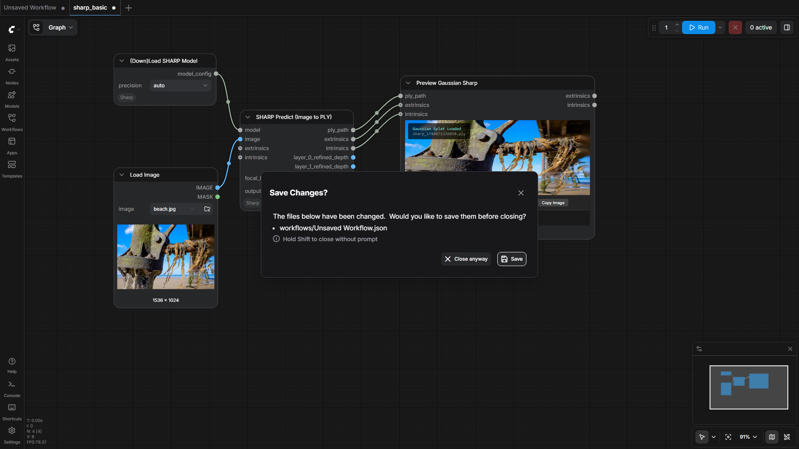
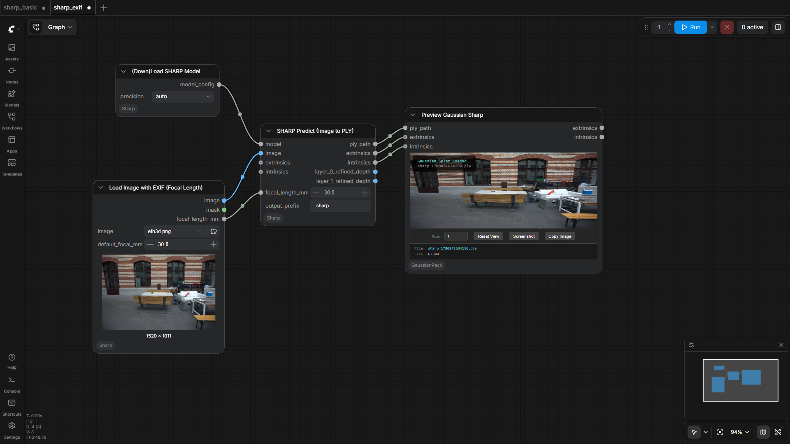
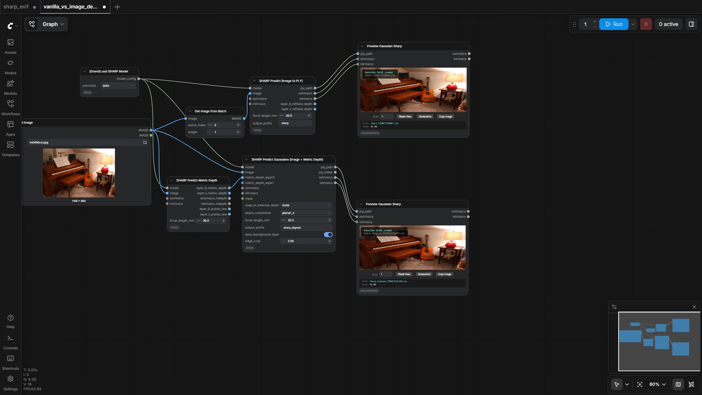

PozzettiAndrea/ComfyUI-Sharp
Test Results
2026-06-07 23:06 UTC
Test run
Windows-10-10.0.26100-SP0
AMD64 Family 25 Model 1 Stepping 1, AuthenticAMD
100.0%
3 passed
3/3 tests
Workflows
Grid
List

sharp_basic
pass
323.66s

sharp_exif
pass
285.21s

vanilla_vs_image_depth_gaussians
pass
1693.50s
Downloaded Models
12 files · 2.6 GB
models/sharp/
2.6 GB
sharp_2572gikvuh.pt
2.6 GB
.cache\huggingface\CACHEDIR.TAG
195.0 B
.cache\huggingface\download\sharp_2572gikvuh.pt.metadata
128.0 B
.cache\huggingface\.gitignore
1.0 B
models/vae_approx/
18.7 MB
taef1_encoder.safetensors
2.4 MB
taesd3_encoder.safetensors
2.4 MB
taef1_decoder.safetensors
2.4 MB
taesd3_decoder.safetensors
2.4 MB
taesdxl_decoder.safetensors
2.3 MB
taesd_decoder.safetensors
2.3 MB
taesdxl_encoder.safetensors
2.3 MB
taesd_encoder.safetensors
2.3 MB
×
‹
›
0.0s / 0.0s
Resource Usage
RAM (GB)
VRAM (GB)